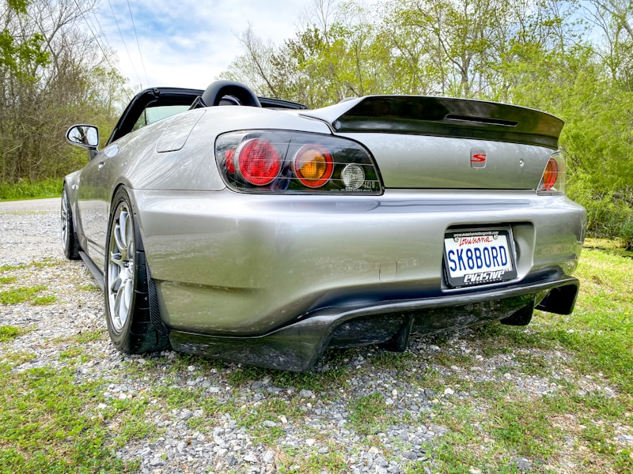

Acura Repair & Service in Cedar Rapids
Expert care for Honda's luxury brand — performance service at independent shop prices.
Expert Acura Repair in Cedar Rapids
Acura is Honda's luxury and performance division, and every MDX, RDX, TLX, ILX, and Integra on the road benefits from Honda's engineering excellence combined with premium materials, advanced drivetrains, and sport-tuned suspensions. At Cedar Automotive, we understand what makes Acura vehicles unique. From the precision of VTEC valve timing to the complexity of the SH-AWD system, our technicians have the knowledge and diagnostic tools to service every Acura system properly.
Because Acura shares its core engineering with Honda, our deep familiarity with Honda powertrains translates directly to faster, more accurate diagnosis of your Acura. Whether you are dealing with a transmission shudder in a 9-speed DCT, a timing belt service on a J-series V6, or an SH-AWD differential concern on your MDX, we handle it with precision and attention to detail. We use OE-quality parts, follow factory service intervals, and treat your Acura with the same care the dealership provides — without the dealership markup.
Cedar Automotive is conveniently located in Cedar Rapids near the regional airport and proudly serves Acura owners across Eastern Iowa. We believe luxury vehicle owners deserve transparent communication, fair pricing, and top-quality workmanship on every visit. That is our commitment to you and your Acura.
Acura Services We Provide
- Acura oil service with manufacturer-recommended synthetic oil and filters
- Brake pad and rotor replacement with proper bedding procedures
- Engine diagnostics and repair for VTEC and turbocharged powertrains
- Transmission service — SH-AWD differential fluid, DCT service, and 10-speed automatic maintenance
- Electrical diagnostics and fault code reading across all Acura modules
- Suspension service — struts, control arms, bushings, and sway bar links
- AC system diagnostics, compressor replacement, and refrigerant service
- Timing belt and timing chain replacement at factory-recommended intervals
- Car key and key fob programming

Why Choose Us for Your Acura?
Premium Care Without Dealership Prices
Your Acura deserves expert attention, but that does not mean you should pay dealership markups. We provide luxury-level service using OE-quality parts and factory procedures at independent shop rates.
All-Makes Expertise
Acura vehicles share platforms and powertrains with Honda, and our deep experience across both brands gives us an edge in diagnosis and repair. We understand VTEC, SH-AWD, and every system in your Acura.
Honest Pricing
We explain every repair upfront, provide written estimates before work begins, and never upsell services your Acura does not need. Transparent communication is how we earn your trust.
Common Acura Issues We Repair
SH-AWD Differential Service
Acura's Super Handling All-Wheel Drive system uses a rear differential with electronically controlled clutch packs that actively distribute torque between the rear wheels. The differential fluid breaks down over time and must be exchanged at regular intervals. Neglected SH-AWD service leads to clutch pack wear, grinding noises, and eventually costly differential replacement. We perform SH-AWD fluid exchanges and diagnose differential concerns before they become major repairs.
Timing Belt Replacement (J-Series V6)
Acura's J-series V6 engines — found in the MDX, TL, and older RDX models — use a timing belt that must be replaced at factory-recommended intervals, typically around 105,000 miles. These are interference engines, meaning a broken timing belt will cause valve-to-piston contact and catastrophic engine damage. We replace the timing belt, water pump, tensioner, and all idler pulleys as a complete kit.
AC Compressor Failure
Acura models are known for AC compressor failures, particularly in the MDX and TLX. A failing compressor may produce grinding or squealing noises, blow warm air, or cycle on and off rapidly. When the compressor fails internally, metal debris can contaminate the entire AC system. We diagnose AC concerns accurately and replace compressors with proper system flushing to prevent repeat failures.
Transmission Shudder (9-Speed DCT)
Certain Acura models equipped with the ZF 9-speed automatic or Honda dual-clutch transmission can develop shuddering, hesitation, or rough shifting. These symptoms are often caused by degraded transmission fluid, worn clutch packs, or software calibration issues. We perform transmission fluid exchanges with the correct factory-specified fluid and can update transmission software to address known shift quality concerns.
Power Steering Pump Whine
Older Acura models with hydraulic power steering — including the TL, TSX, and earlier MDX generations — commonly develop a whining noise from the power steering pump. The pump may also leak fluid from worn seals. Left unaddressed, a failing power steering pump can cause heavy steering and damage the steering rack. We replace power steering pumps and flush the system to remove contaminated fluid.
VTC Actuator Rattle
Acura's Variable Timing Control actuator — found on the K-series four-cylinder and J-series V6 engines — is known for developing a rattling noise on cold startup. The VTC actuator controls camshaft timing and uses oil pressure to operate. A worn actuator or low oil pressure at startup causes the distinctive rattle. We replace VTC actuators and inspect the oil system to ensure proper pressure and flow to prevent recurrence.
Related Services
Frequently Asked Questions
Can an independent shop properly service an Acura?
Yes. Acura vehicles are built on Honda platforms and use well-documented powertrains, electronics, and drivetrains. Cedar Automotive carries professional-grade diagnostic scanners that read manufacturer-specific fault codes across all Acura modules. We use OE-quality parts and follow factory service procedures, providing the same level of care as the Acura dealership at a significantly lower cost.
Do you service Acura SH-AWD systems?
Absolutely. Acura's Super Handling All-Wheel Drive (SH-AWD) system is one of the most advanced AWD systems on the market, and it requires proper maintenance to perform correctly. We perform SH-AWD differential fluid exchanges at factory-recommended intervals and diagnose SH-AWD warning lights, coupling issues, and differential noise. Keeping up with SH-AWD service prevents costly rear differential repairs down the road.
What Acura models do you work on?
We service all Acura models including the MDX and RDX SUVs, TLX and ILX sedans, the new Integra, and older models like the TSX, TL, and RSX. Whether your Acura has a naturally aspirated VTEC engine or a modern turbocharged powertrain, we have the tools and experience to service it properly.
Do you program Acura keys and fobs?
Yes — we program Acura keys and key fobs for all models including MDX, RDX, TLX, and Integra. Acura shares platforms with Honda, and our deep experience with both brands gives us an edge in key programming. We handle all-keys-lost situations at independent shop prices. Call (319) 450-7584 for pricing.